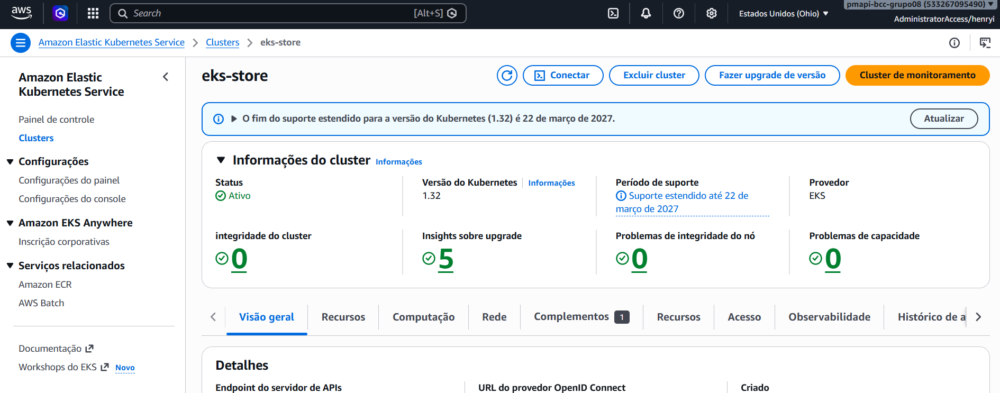
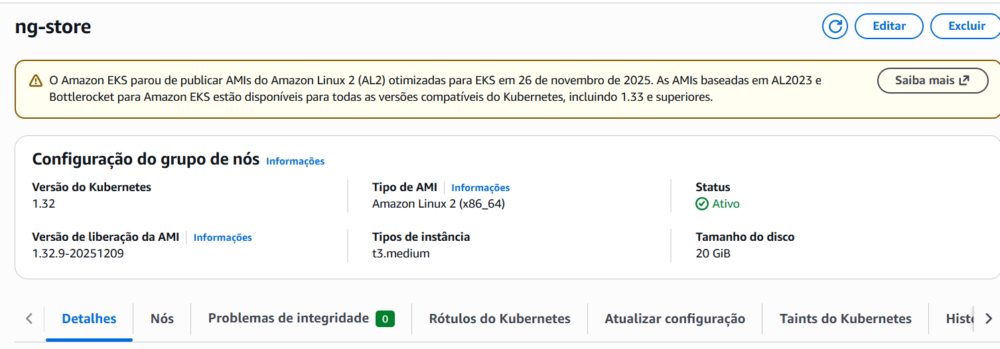
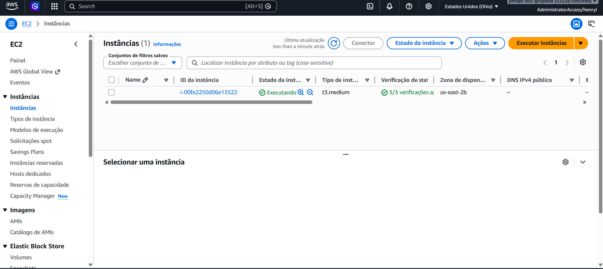

EKS — Kubernetes na AWS
Visão Geral do Cluster
O cluster EKS gerencia os pods de todos os microsserviços. O plano de controle (control plane) é gerenciado pela AWS — só os nodes EC2 são responsabilidade do projeto.
| Parâmetro | Valor |
|---|---|
| Nome do cluster | eks-store |
| Região | us-east-2 |
| Versão Kubernetes | v1.32.9 |
| Node group | ng-store |
| Tipo de instância EC2 | t3.medium |
| Nodes desired / ativos | 1 |

Console AWS → EKS → eks-store — visão geral do clusterNode Group ng-store

Console AWS → EKS → eks-store → Node Groups → ng-storeCriação do Cluster
O cluster foi criado com eksctl, que provisiona automaticamente VPC, subnets, roles IAM e node group:
eksctl create cluster \
--name eks-store \
--region us-east-2 \
--nodegroup-name ng-store \
--node-type t3.medium \
--nodes 1
Justificativa da instância EC2: t3.medium oferece equilíbrio entre custo e capacidade de memória para rodar múltiplos pods simultaneamente. Instâncias maiores aumentariam custo sem benefício real no volume de carga do projeto.
Configuração do kubectl
Após criação do cluster, configure o contexto local:
Verificar conectividade:
Deploy dos Microsserviços
Após o build das imagens via Jenkins, o deploy no cluster é feito com:
kubectl set image deployment/order order=henryidesis/order:latest
kubectl rollout status deployment/order
kubectl set image deployment/gateway gateway=henryidesis/gateway:latest
kubectl rollout status deployment/gateway
Exposição via NLB
O Gateway é exposto externamente através de um Network Load Balancer criado automaticamente pelo Kubernetes ao declarar um Service do tipo LoadBalancer:
apiVersion: v1
kind: Service
metadata:
name: gateway
spec:
type: LoadBalancer
ports:
- port: 80
targetPort: 8080
selector:
app: gateway
Teardown
Execute após a apresentação
O node group ng-store gera custo enquanto estiver ativo. Desligue após a apresentação.
eksctl delete nodegroup \
--cluster eks-store \
--name ng-store \
--region us-east-2
eksctl delete cluster \
--name eks-store \
--region us-east-2
Verifique recursos órfãos:
aws ec2 describe-instances \
--region us-east-2 \
--query 'Reservations[*].Instances[*].[InstanceId,State.Name,InstanceType]' \
--output table
aws elbv2 describe-load-balancers \
--region us-east-2 \
--output table

Console AWS → EKS → eks-store → Nodes (instâncias EC2 worker)